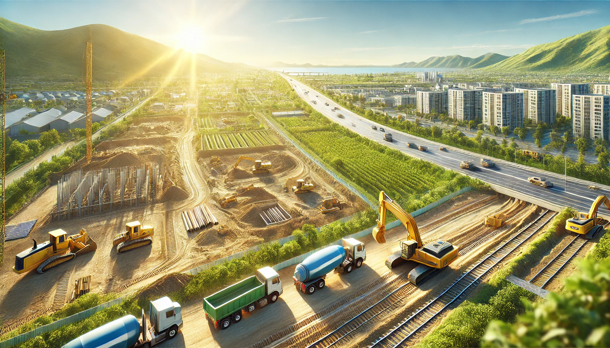

Land Development: What You Need to Know
Land development involves a complex process of transforming raw land into a construction-ready site. Here are some key aspects you need to know:
- Zoning and Permits: Understanding the local zoning laws and obtaining the necessary permits is crucial for any land development project.
- Site Preparation: Preparing the land for construction involves clearing, grading, and ensuring proper drainage.
- Infrastructure Development: Installing essential infrastructure such as roads, utilities, and sewage systems is a vital part of land development.
- Environmental Considerations: Assessing and mitigating the environmental impact of the development is essential for sustainability.
- Project Management: Effective project management is necessary to ensure that the development progresses smoothly and stays within budget.